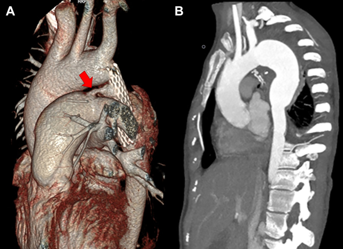
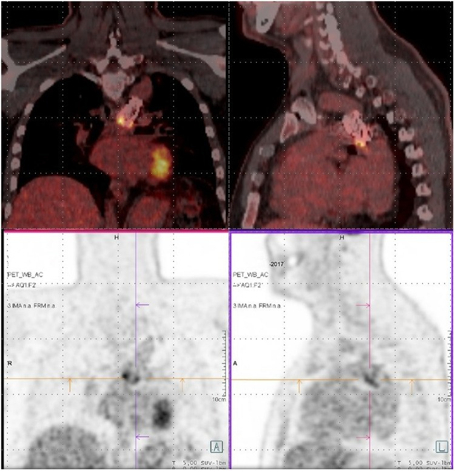
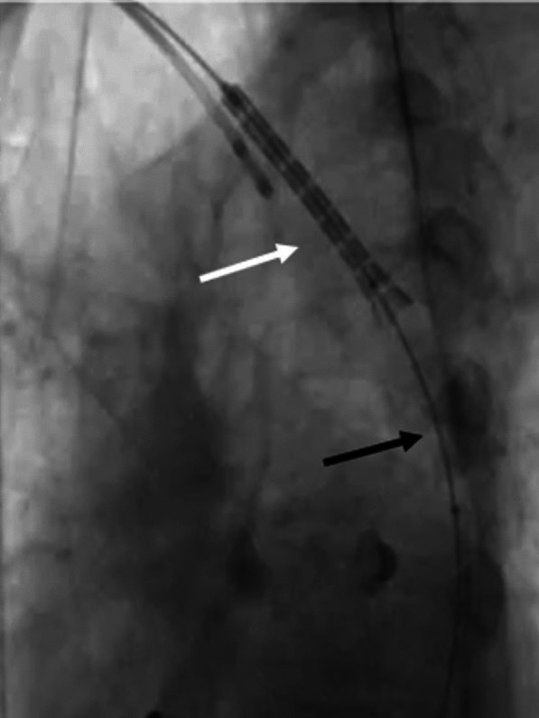
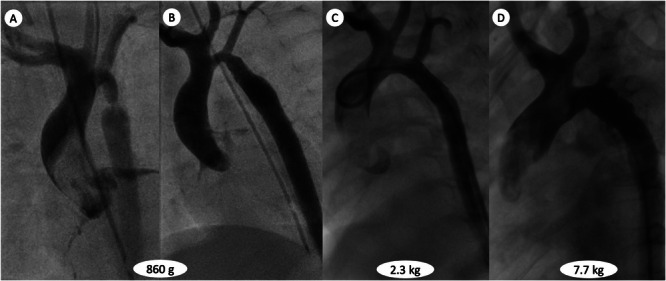

6142 — Nhiễm trùng, di trú và gãy stent mạch ở trẻ: sốt sau can thiệp, giả phình giả nhiễm trùng, mảnh stent trôi
Tags: pattern:nhiem-trung-stent pattern:gia-phinh pattern:di-tru-stent pattern:gay-stent pattern:sot-keo-dai pattern:thuyen-tac-nhiem-khuan vung:eo-dong-mach-chu vung:quai-dong-mach-chu vung:dong-mach-chu-nguc vung:lach protocol:CTA-ECG-gating protocol:PET-CT-FDG protocol:sieu-am-tim-TEE protocol:chup-mach-DSA score:khong
Mức chắc chắn (certainty): tổng hợp y văn (literature synthesis) — ghép ca nữ 29 tuổi sốt kéo dài 2 tháng, stent hẹp eo đặt 10 năm trước, giả phình giả 46 × 32 × 49 mm + nhiễm trùng huyết do Stenotrophomonas maltophilia (Journal of Investigative Medicine High Impact Case Reports 2026, PMC12905688), ca nam 53 tuổi viêm stent (stentitis) 1,5 năm sau đặt stent CP, PET/CT dương tính, Streptococcus gordonii, điều trị kháng sinh đơn thuần (European Heart Journal – Case Reports 2020, PMC7319810), ca nam 25 tuổi viêm động mạch chủ + sùi 17 × 8 mm sau nhiễm COVID-19, CT không thấy tổn thương (Journal of Tehran University Heart Center 2023, PMC10748656), ca nữ 22 tuổi hội chứng Turner di trú stent lên động mạch cánh tay đầu trong lúc đặt (The Egyptian Heart Journal 2025, PMC12014972), bé trai 15 tháng gãy stent chủ đích để lớn theo trẻ (Clinical Case Reports 2026, PMC12775195), 26 sơ sinh đặt stent rồi mổ thì hai (World Journal for Pediatric and Congenital Heart Surgery 2022, PMC9243453) và ca trẻ 12 tuổi giả phình giả nhiễm trùng sau stent phủ (World Journal for Pediatric and Congenital Heart Surgery 2012, DOI 10.1177/2150135112439079 — không có toàn văn mở). Lưu ý trung thực nguồn: bằng chứng nhiễm trùng stent ở đúng lứa nhi khoa rất mỏng — 3 ca nhiễm trùng có ảnh là người trẻ 25–29 tuổi đặt stent từ thời niên thiếu, còn ca 12 tuổi chỉ có mô tả trong y văn; bài ghi rõ chỗ nào suy luận từ người lớn sang trẻ.
Câu hỏi thực hành: bé gái 12 tuổi đặt stent phủ điều trị hẹp eo động mạch chủ 4 năm trước, nay sốt 3 tuần, mệt, sụt cân, CRP 68 mg/L, cấy máu âm tính vì đã uống kháng sinh 2 tuần; CTA thấy túi cản quang 18 × 14 mm ngoài lòng mạch ngay đầu xa stent. Câu hỏi: đây là nhiễm trùng stent, giả phình giả nhiễm trùng hay chỉ là phản ứng viêm quanh stent? có phải mổ lấy stent, hay kháng sinh dài là đủ? PET/CT đặt ở đâu trong chuỗi chẩn đoán? và nếu stent di trú/gãy thì xử trí nội mạch được không, khi nào buộc phải mổ? Bài chốt năm việc: (1) sốt sau stent mạch = nhiễm trùng stent cho tới khi chứng minh ngược lại, kể cả cấy máu âm tính; (2) CTA là bước đầu nhưng có thể bỏ sót sùi trong lòng stent vì nhiễu kim loại — phải phối hợp TEE và PET/CT; (3) tử vong của viêm động mạch chủ nhiễm trùng là 21–44%, cao hơn khi chỉ dùng kháng sinh; (4) di trú stent gặp ở ~5% ca đặt stent hẹp eo, phần lớn di trú gần cần mổ, nhưng có thể cứu bằng bóng/thì kéo có kiểm soát; (5) trẻ đang lớn thì gãy stent là chuyện của "kích thước cố định trong mạch đang lớn" — phải có lịch chụp, không chờ triệu chứng.
1. Tổng quan bệnh học – cơ chế hình ảnh: tại sao stent kim loại lại thành "ổ nhiễm"
- Bối cảnh dịch tễ: hẹp eo động mạch chủ (coarctation of the aorta, CoA) chiếm 5–8% dị tật tim bẩm sinh; đặt stent qua da đã thành điều trị chuẩn cho hẹp eo nguyên phát/tái phát, và di trú stent gặp ở khoảng 5% ca (PMC12014972). Gãy stent trong thử nghiệm COAST/COAST II (stent CP) là 24,4% ở 48–60 tháng, kèm can thiệp lại 21% và phình 6,3% — và chỉ 16% bệnh nhân được chụp mặt cắt nên tỉ lệ thật có thể cao hơn (PMC10340190, qua bài 6116).
- TẠI SAO nhiễm trùng stent hiếm nhưng nặng: kim loại không có mạch máu → không có bạch cầu và kháng sinh tới trực tiếp; stent chỉ được nội mạc hóa (endothelialization) dần trong nhiều tuần–tháng. Khi nội mạc hóa chưa hoàn chỉnh (hoặc bị rách do nong lại), dòng máu chảy quanh sợi kim loại tạo vùng xoáy tốc độ thấp, cho phép vi khuẩn bám và tạo màng sinh học (biofilm). Màng sinh học làm kháng sinh khó thấm → cấy máu dễ âm tính sau khi đã dùng kháng sinh, và chỉ PCR trên mảnh stent lấy ra mới xác định được căn nguyên (ca 29 tuổi: cấy stent âm, PCR dương Stenotrophomonas maltophilia; PMC12905688).
- TẠI SAO thành giả phình: nhiễm khuẩn phá hủy lớp áo giữa (media) và mô quanh mạch → thành mạch mất tính chịu lực, máu thoát ra tạo túi giả phình (pseudoaneurysm) chỉ được bao bởi mô xơ. Đây là lý do nhiễm trùng stent không chỉ là "viêm": khi đã có túi giả phình, kháng sinh đơn thuần gần như không thể lành vì ổ nhiễm nằm ngoài lòng mạch và không có tưới máu.
- TẠI SAO nhiễu kim loại làm sai hình ảnh: stent cản quang mạnh tạo vệt giả (streak artifact) trên CT — trong ca 25 tuổi, CTA không thấy khối sùi 17 × 8 mm trong stent, chỉ siêu âm tim qua thực quản (TEE) mới thấy (PMC10748656). Vì vậy "CTA âm tính" không loại trừ nhiễm trùng stent.
- TẠI SAO PET/CT phân biệt được: viêm lành thương sau can thiệp cho ngấm FDG lan tỏa, nhẹ, đồng nhất dọc stent; nhiễm trùng cho ngấm mạnh, không đồng nhất, khu trú ở một đầu stent (PMC12905688; PMC7319810). FDG có thể còn tăng trong vài tuần đầu sau đặt stent do viêm lành thương → không chụp quá sớm nếu lâm sàng cho phép (suy luận từ cơ chế viêm lành thương; bằng chứng định lượng về mốc thời gian chưa rõ — cần tra).
- Ngưỡng định lượng phải thuộc (dùng ngay tại giường):
- Sốt + viêm: ESR 93 mm/h, CRP 38 mg/L, Hb 8,7 g/dL, bạch cầu 5.500/µL (neutrophil 69%) trong ca điển hình — bạch cầu bình thường không loại trừ (PMC12905688).
- Kích thước tổn thương: giả phình giả 46 × 32 × 49 mm; sùi trong động mạch phổi 22 × 8 mm; phình giả nhiễm trùng động mạch lách 11 × 8 mm, động mạch chậu trong trái 23 × 15 mm (PMC12905688); sùi trong stent 17 × 8 mm, lòng hiệu dụng 11 mm, đường kính ngoài 22 mm (PMC10748656).
- Tử vong viêm động mạch chủ nhiễm trùng: 21–44%, cao hơn khi chỉ dùng kháng sinh (PMC7319810; PMC12905688).
- Di trú stent: ~5% ca đặt stent hẹp eo (PMC12014972); gãy stent: 24,4% ở 48–60 tháng (COAST/COAST II, PMC10340190).
- Trẻ đang lớn: stent cố định trong mạch lớn từ 860 g → 2,3 kg → 7,7 kg (bé 15 tháng) buộc phải nong lại nhiều lần và gãy chủ đích (PMC12775195).
- Sinh lý bệnh của "sốt mà không tìm ra ổ": sau khi loại trừ viêm nội tâm mạc nhiễm khuẩn, viêm phổi, nhiễm trùng tiết niệu, cần coi stent là ổ nhiễm tiềm ẩn — đặc biệt khi có dị tật mạch kèm theo (ca 29 tuổi có ống động mạch chủ (PDA) bị bỏ sót, tạo dòng xoáy quanh stent) hoặc nhiễm trùng huyết thoáng qua trước đó. Nhiễm trùng huyết có thể gieo mầm phình giả nhiễm trùng ở xa (lách, chậu, động mạch phổi) — nên chụp toàn thân một lần khi đã xác định stent nhiễm.

Nữ 29 tuổi, stent hẹp eo đặt 10 năm trước, sốt 2 tháng. (A) CTA 3D: stent ở eo (mũi tên mở) và giả phình giả 46 × 32 × 49 mm ở động mạch chủ xuống ngay đầu xa stent; mũi tên đỏ chỉ ống động mạch chủ (PDA) bị bỏ sót — nguồn dòng xoáy quanh stent. (B) CTA 1 năm sau mổ: cắt stent + túi giả phình, thắt PDA, thay đoạn động mạch chủ bằng homograft, không còn dấu nhiễm. Nguồn: Journal of Investigative Medicine High Impact Case Reports 2026 (PMC12905688), CC BY-NC-ND 4.0 — nguyên bản, không cắt/ghép.2. Mẫu hình + chẩn đoán phân biệt theo vị trí và theo thời gian (gamut)
- Nguyên tắc: đặt stent lên trục thời gian trước, rồi mới đặt lên trục giải phẫu. Cùng một "bất thường quanh stent" nhưng ngày thứ 3, tháng thứ 6 và năm thứ 5 là ba bệnh khác nhau.
- Theo thời gian:
- Sớm (< 30 ngày): di trú stent, bóc tách/đứt thành mạch do bóng, huyết khối cấp, nhiễm trùng vết chọc, sốt do phản ứng vật liệu (hiếm).
- Trung hạn (1–12 tháng): hẹp trong stent do tăng sinh nội mạc, huyết khối bán cấp, viêm stent sớm (ca 53 tuổi: 1,5 năm), giả phình ở chỗ nong.
- Muộn (> 1 năm): nhiễm trùng stent/viêm động mạch chủ, gãy stent + mảnh trôi, giả phình giả muộn, hẹp lại, và ở trẻ là stent không lớn theo trẻ.
- Theo vị trí:
- Trong lòng stent: sùi/nhiễm trùng, huyết khối, hẹp trong stent, stent nong không hết.
- Quanh stent (quanh mạch): giả phình giả, áp-xe quanh động mạch chủ, dò động mạch chủ–thực quản/phế quản (thể chết người, thường có khí quanh stent).
- Xa stent: thuyên tắc nhiễm khuẩn → phình giả nhiễm trùng lách/chậu, sùi động mạch phổi, nhồi máu tạng; hoặc mảnh stent trôi xuống động mạch chủ bụng.
- Ngoài mạch: viêm nội tâm mạc nhiễm khuẩn trên van bẩm sinh (van hai lá, van động mạch chủ), viêm màng ngoài tim.
- Mnemonic "S-T-E-N-T" cho sốt sau stent:
- Sepsis/stentitis — nhiễm trùng stent.
- Thrombus — huyết khối trong stent (sốt nhẹ + thiếu máu chi).
- Embolus/endoleak — thuyên tắc nhiễm khuẩn, rò trong stent.
- Narrowing — hẹp trong stent (thường không sốt, nhưng dễ nhầm khi có viêm).
- Trauma/fracture — gãy stent, mảnh trôi, di trú.
3. Bảng so sánh phân biệt (ma trận đối chiếu)
| Thực thể | Hình ảnh điển hình | Chốt vào (rule-in) | Chốt loại (rule-out) | Gợi ý xác nhận |
|---|---|---|---|---|
| Nhiễm trùng stent sớm (stentitis, chưa có giả phình) | Stent áp sát thành, FDG ngấm mạnh khu trú một đầu stent; CTA có thể bình thường | Sốt + chills sau stent + FDG khu trú ở stent + cấy máu dương (kể cả sau khi đã dùng kháng sinh) | CTA không có túi ngoài lòng mạch, không khí quanh stent, không sùi trên TEE | Cấy máu 3 bộ trước kháng sinh; PET/CT; TEE |
| Nhiễm trùng stent + giả phình giả | Túi cản quang ngoài lòng mạch ở đầu xa/đầu gần stent, thành dày, có thể có khí; FDG mạnh cả túi và mô quanh | Túi ngoài lòng mạch + sốt/CRP cao + FDG dương | Túi không ngấm FDG, bờ nhẵn, không triệu chứng → nghĩ giả phình vô khuẩn | CTA + PET/CT + TEE; PCR/mô bệnh mảnh lấy ra |
| Huyết khối trong stent | Khuyết thuốc trong lòng stent, không có túi ngoài mạch, có thể tắc nhánh | Thiếu máu chi/tăng huyết áp cấp + khuyết thuốc trong stent | Không sốt, không FDG khu trú, không sùi | CTA/Doppler; DSA khi can thiệp |
| Hẹp trong stent (in-stent restenosis) | Eo thắt trong stent, tăng sinh nội mạc nhẵn, gradient tăng | Gradient xâm nhập ≥ 20 mmHg hoặc Vmax > 2 m/s tại stent | Không sốt, không túi ngoài mạch, không FDG | Siêu âm tim + CTA; đo gradient |
| Di trú stent | Stent lệch khỏi vị trí hẹp, trôi lên quai/động mạch cánh tay đầu hoặc xuống dưới | Stent không còn bắc qua đoạn hẹp + gradient còn cao | Stent đúng vị trí, gradient sau đặt < 20 mmHg | Fluoroscopy/DSA; CTA 3D |
| Gãy stent / mảnh trôi | Đứt sợi stent, mảnh rời ở động mạch chủ bụng; có thể hoàn toàn không triệu chứng | CT/fluoroscopy thấy mảnh ngoài vị trí hoặc đứt sợi | Stent liền, không di lệch, không mảnh tự do | CTA (cửa sổ rộng, MPR), fluoroscopy |
| Sốt không do stent | Ổ nhiễm khác: viêm nội tâm mạc, viêm phổi, nhiễm trùng tiết niệu, viêm mạch (Takayasu, Behçet) | Ổ nhiễm rõ ngoài stent + cấy máu phù hợp | PET/CT âm tính hoàn toàn ở stent + không túi ngoài mạch | Khám toàn thân, siêu âm tim, cấy máu, PET/CT |
- Ảnh ghép đối chiếu: bài dùng 4 ảnh rời của 4 bệnh nhân khác nhau (nhiễm stent + giả phình; viêm stent sớm trên PET; di trú stent; stent gãy chủ đích ở trẻ đang lớn) — không ghép vì ghép sẽ khiến người đọc tưởng cùng một ca (lý do ghi trong
images/CREDITS.md).
4. Protocol chẩn đoán – theo dõi – ngưỡng can thiệp
- Khi có sốt sau stent (bất kỳ thời điểm nào):
- Cấy máu 3 bộ từ 3 vị trí trước kháng sinh + CRP/ESR/máu ngoại vi; không hoãn cấy vì chờ hình ảnh.
- Siêu âm tim (TTE) + TEE nếu TTE không kết luận: TEE thấy sùi trong stent, túi giả phình, hẹp trong stent tốt hơn vì đầu dò sát động mạch chủ xuống (PMC10748656).
- CTA động mạch chủ toàn bộ (ECG-gating, lát ≤ 1 mm) để tìm túi giả phình, khí quanh stent, hẹp trong stent; đọc cả lớp ngoài stent, không chỉ lòng stent.
- PET/CT FDG khi CTA/TEE không kết luận hoặc cần đánh giá phạm vi nhiễm toàn thân; chụp lại sau điều trị để theo dõi đáp ứng (ca 29 tuổi: tổn thương lách giảm kích thước và FDG sau 3 tháng; PMC12905688).
- Chụp toàn thân một lần (động mạch chủ → chậu → lách) khi đã xác định nhiễm stent, vì thuyên tắc nhiễm khuẩn có thể tạo phình giả ở xa.
- Điều trị:
- Kháng sinh theo cấy/PCR, thời gian dài (thường 4–6 tuần tĩnh mạch, sau đó uống tùy đáp ứng) — nhưng kháng sinh đơn thuần chỉ đặt ra khi: nhiễm sớm, chưa có giả phình, không có sùi lớn, cấy máu dương với vi khuẩn nhạy cảm, đáp ứng lâm sàng nhanh. Ca 53 tuổi (viêm stent 1,5 năm, chưa có giả phình) hồi phục với kháng sinh đơn thuần (PMC7319810) — không được lấy đó làm chuẩn cho ca có giả phình.
- Mổ lấy stent + cắt túi giả phình + tái tạo mạch là điều trị chuẩn khi có giả phình giả, nhiễm trùng dai dẳng, sùi lớn, hoặc thất bại kháng sinh. Vật liệu: homograft (ca 29 tuổi) hoặc ống nhân tạo có/không omental wrap; cần kháng sinh trước–trong–sau mổ và theo dõi PET/CT sau mổ.
- Không đặt stent mới vào ổ nhiễm trừ khi đó là biện pháp bắc cầu để cứu mạng và đã kiểm soát nhiễm.
- Lịch theo dõi sau can thiệp (trẻ đang lớn) — ghi vào giấy ra viện:
- Siêu âm tim + huyết áp 4 chi mỗi 3–6 tháng trong 2 năm đầu, sau đó mỗi năm; đo gradient qua stent và đường kính stent so với động mạch chủ.
- CTA/CMR mỗi 1–2 năm ở trẻ còn lớn (stent không lớn theo trẻ); CTA khi có stent (CMR bị nhiễu kim loại), CMR khi không có stent.
- Chụp mạch/fluoroscopy khi nghi gãy stent hoặc trước khi nong lại; không nong bóng áp lực cao tùy tiện ở stent đã gãy (nguy cơ mảnh trôi).
- Ngưỡng can thiệp lại: gradient xâm nhập ≥ 20 mmHg hoặc Vmax > 2 m/s; tăng huyết áp tồn lưu; di trú stent làm mất tác dụng; gãy stent có mảnh tự do; nhiễm trùng stent (mổ).
flowchart TD
A[Sốt sau đặt stent mạch] --> B[Cấy máu 3 bộ + CRP/ESR + TTE]
B --> C{TTE/TEE thấy sùi hoặc túi giả phình?}
C -->|Có| D[CTA động mạch chủ + PET/CT toàn thân]
C -->|Không| E[CTA ECG-gating lát mỏng]
E --> F{CTA có túi ngoài lòng mạch, khí, hẹp trong stent?}
F -->|Có| D
F -->|Không| G[PET/CT FDG]
G --> H{FDG khu trú mạnh ở stent?}
H -->|Có| D
H -->|Không| I[Tìm ổ nhiễm khác + theo dõi]
D --> J{Có giả phình giả hoặc sùi lớn?}
J -->|Có| K[Kháng sinh + mổ lấy stent, homograft]
J -->|Không| L[Kháng sinh dài, theo dõi PET/CT]
K --> M[PET/CT + CTA sau 3-6 tháng]
L --> M

Nam 53 tuổi (hẹp eo + van động mạch chủ hai lá + thông liên thất), 1,5 năm sau đặt stent CP: sốt, ớn lạnh, mồ hôi đêm. PET/CT FDG cho ngấm khu trú ở đầu xa stent trong động mạch chủ xuống (mặt cắt trục và mặt phẳng đứng); CTA không có giả phình. Cấy máu Streptococcus gordonii; kháng sinh đơn thuần làm hết sốt, bình thường hóa chỉ số viêm. Đây là đầu bên kia của phổ bệnh: nhiễm sớm, chưa phá thành → có thể cứu bằng kháng sinh. Nguồn: European Heart Journal – Case Reports 2020 (PMC7319810), CC BY-NC 4.0 — nguyên bản.5. Biến thể bình thường và cạm bẫy
- FDG dương tính giả sớm sau can thiệp: viêm lành thương quanh stent ngấm FDG lan tỏa, nhẹ trong vài tuần đầu. Đừng chụp PET/CT trong 4 tuần đầu nếu không cấp cứu; nếu buộc phải chụp, so với ngấm đồng nhất dọc stent và tìm ổ khu trú không đồng nhất mới gợi ý nhiễm.
- CTA âm tính giả do nhiễu kim loại: sùi 17 × 8 mm trong stent không thấy trên CTA (PMC10748656). Luôn bổ sung TEE khi lâm sàng nghi nhiễm mà CTA âm.
- Cấy máu âm tính không loại trừ: bệnh nhân đã uống kháng sinh nhiều đợt (ca 29 tuổi: 2 tháng kháng sinh ngoại trú trước nhập viện) → cấy âm; chẩn đoán dựa vào PCR/mô bệnh mảnh stent lấy ra.
- Bạch cầu bình thường: ca 29 tuổi có WBC 5.500/µL nhưng ESR 93 mm/h và CRP 38 mg/L — đừng loại trừ nhiễm chỉ vì công thức máu bình thường.
- Dị tật bỏ sót: PDA không được phát hiện trước can thiệp tạo dòng xoáy quanh stent, làm nhiễm trùng dai dẳng; phải đánh giá lại toàn bộ giải phẫu trước khi đặt stent (PMC12905688).
- Di trú stent bị đọc thành "hẹp lại": nếu stent trôi lên quai, đoạn hẹp vẫn còn nhưng gradient có thể "cải thiện giả" do stent nằm ở chỗ rộng hơn; luôn đối chiếu vị trí stent trên fluoroscopy/CTA 3D, không chỉ đọc gradient.
- Mảnh stent trôi im lặng: stent sinh học gãy ở 6 tháng, mảnh trôi xuống động mạch chủ bụng, trẻ hoàn toàn không triệu chứng, chỉ phát hiện khi siêu âm thấy gradient 55 mmHg (PMC13575008, bài 6119). Vì vậy không dừng chụp mặt cắt chỉ vì trẻ khỏe.
- "Đã mổ lấy stent nhiễm là xong": vẫn phải PET/CT + CTA sau 3–6 tháng vì ổ nhiễm có thể còn ở mô quanh mạch hoặc phình giả ở xa (lách, chậu) chưa thoái triển.
- Satisfaction of search: thấy giả phình ở đầu xa stent rồi dừng → bỏ sót sùi trong động mạch phổi, nhồi máu lách, phình giả động mạch chậu (đủ cả ba trong ca 29 tuổi).
6. Tự lượng giá — Blind Quiz
Ca 1 — Nữ 29 tuổi, sốt 2 tháng, stent hẹp eo đặt 10 năm trước.
- Gợi ý: mệt, chán ăn, sốt từng cơn; ESR 93 mm/h, CRP 38 mg/L, Hb 8,7 g/dL; đã dùng nhiều đợt kháng sinh uống.
- Câu hỏi: (1) Tổn thương ngoài lòng mạch ở đâu, kích thước? (2) Vì sao cấy máu âm? (3) Có phải mổ ngay hay thử kháng sinh?
Bấm để hiện đáp án
- (A) Stent ở eo + giả phình giả 46 × 32 × 49 mm ở động mạch chủ xuống ngay đầu xa stent; mũi tên đỏ = PDA bị bỏ sót. Siêu âm còn thấy sùi 22 × 8 mm ở động mạch phổi trái và phình giả lách 11 × 8 mm, chậu trong 23 × 15 mm — thuyên tắc nhiễm khuẩn đa ổ.
- Cấy máu âm vì đã dùng kháng sinh 2 tháng trước đó; PCR mảnh stent sau mổ dương Stenotrophomonas maltophilia.
- Điều trị: kháng sinh 4 tuần (imipenem + rifampin + vancomycin) → mổ cắt stent + túi giả phình, thắt PDA, homograft; 1 năm sau không tái nhiễm (B).
- Bài học: sốt + stent + giả phình = mổ, kháng sinh chỉ là bước đệm.
- Nguồn: Journal of Investigative Medicine High Impact Case Reports 2026 (PMC12905688), CC BY-NC-ND 4.0.
Ca 2 — Nam 53 tuổi, sốt/ớn lạnh 1,5 năm sau đặt stent CP, CTA không có giả phình.
- Gợi ý: không dấu viêm nội tâm mạc trên siêu âm; CTA chỉ có stent, không túi ngoài mạch.
- Câu hỏi: (1) FDG ngấm ở đâu, có phải nhiễm trùng stent? (2) Cấy máu có thể ra gì? (3) Kháng sinh đơn thuần có đủ?
Bấm để hiện đáp án
- FDG ngấm khu trú ở đầu xa stent trong động mạch chủ xuống → viêm stent (stentitis), chưa có giả phình.
- Cấy máu ra Streptococcus gordonii (liên cầu miệng) — nguồn từ niêm mạc miệng; cần tìm ổ răng/miệng.
- Vì chưa phá thành mạch, chưa có giả phình, kháng sinh đơn thuần (theo kháng sinh đồ) làm hết sốt và bình thường hóa chỉ số viêm; vẫn phải theo dõi hình ảnh vì nguy cơ giả phình muộn.
- Bài học: PET/CT là công cụ chốt khi CTA âm, và mức độ tổn thương thành mạch quyết định có mổ hay không.
- Nguồn: European Heart Journal – Case Reports 2020 (PMC7319810), CC BY-NC 4.0.
Ca 3 — Nữ 22 tuổi Turner, hẹp eo nặng gradient 90 mmHg; trong lúc đặt stent, stent trượt khỏi bóng và trôi lên quai.

- Gợi ý: đoạn hẹp 3 mm, trước hẹp 18 mm, sau hẹp 22 mm; đã nong sơ bộ bằng bóng 8 mm; tạo nhịp hạ áp 180 lần/phút.
- Câu hỏi: (1) Vì sao stent trượt? (2) Cứu nội mạch theo trình tự nào? (3) Khi nào phải mổ?
Bấm để hiện đáp án
- Stent trượt do đoạn hẹp quá chặt (3 mm) + bóng chưa áp sát/kiểm soát; stent trôi lên quai rồi vào động mạch cánh tay đầu.
- Trình tự cứu: giữ stent bằng pigtail từ động mạch quay phải → đưa bóng nhỏ 8 × 20 mm qua stent, bơm và kéo cả hệ xuống → nếu kẹt ở đoạn hẹp nhất, nong đoạn hẹp bằng bóng lớn hơn 12 × 40 mm → kéo stent về đúng vị trí → nong stent bằng bóng 16 mm. Gradient sau thủ thuật < 5 mmHg, ra viện sau 2 ngày, CT 6 tháng stent mở tốt.
- Mổ khi: không kéo được stent, stent vỡ/bung sợi, hoặc tắc mạch não do stent trôi lên quai.
- Bài học: dự phòng — chọn stent 80–90% đường kính trước hẹp, nong sơ bộ < 3 lần đường kính chỗ hẹp nhất, kiểm soát nhịp/hạ áp, và luôn có dây dẫn thứ hai để cứu.
- Nguồn: The Egyptian Heart Journal 2025 (PMC12014972), CC BY 4.0.
Ca 4 — Bé trai 15 tháng, stent mạch vành đặt lúc 1 tuần tuổi vì hẹp eo nặng; nay nong lại lần thứ ba. Nhìn chuỗi mạch qua các mốc cân nặng.

- Gợi ý: (A) 860 g; (B) sau stent; (C) 2,3 kg sau stent thứ hai; (D) 7,7 kg sau gãy stent chủ đích.
- Câu hỏi: (1) Vì sao phải gãy stent? (2) Cơ chế nào làm stent "không lớn"? (3) Biến chứng của gãy stent chủ đích?
Bấm để hiện đáp án
- Stent kim loại có kích thước cố định, trong khi động mạch chủ của trẻ tăng đường kính theo cân nặng (860 g → 2,3 kg → 7,7 kg) → stent trở thành chỗ hẹp tương đối; phải nong lại nhiều lần và cuối cùng cố ý làm gãy (intentional stent fracture, ISF) bằng bóng áp lực rất cao.
- Trong mô hình lợn, ISF có biến chứng đáng kể, trừ trôi mảnh stent có thể phòng bằng đặt stent trước (pre-stenting) — đây là lý do ca này đặt stent thứ hai trước khi gãy.
- Bài học: ở trẻ nhỏ, stent chỉ là bắc cầu, không phải giải pháp vĩnh viễn; cần lịch chụp và kế hoạch nong/gãy/mổ ngay từ đầu.
- Nguồn: Clinical Case Reports 2026 (PMC12775195), CC BY 4.0.
Bài liên quan chéo
- 6116 – Hẹp eo động mạch chủ ở trẻ (chẩn đoán ban đầu, chọn nong bóng vs stent)
- 6119 – Tăng huyết áp tồn lưu & hẹp lại sau can thiệp hẹp eo ĐMC (gãy scaffold sinh học, gradient ≥ 20 mmHg)
- 6118 – Hội chứng động mạch chủ giữa (stent ở động mạch chủ bụng, nhiễm stent mạch tạng)
- 6110 – Nhiễm trùng quanh khớp nhân tạo sau THA (mô hình "vật liệu nhân tạo + màng sinh học" tương tự)
- 800 – Tổng quan tim mạch
Ảnh
images/6142_nhiem-trung-di-tru-stent_CT_PMC12905688-F6.jpg— CTA stent nhiễm + giả phình giả, và kết quả sau mổ (PMC12905688, CC BY-NC-ND 4.0).images/6142_nhiem-trung-di-tru-stent_PETCT_PMC7319810-F2.jpg— PET/CT FDG ngấm đầu xa stent (PMC7319810, CC BY-NC 4.0).images/6142_nhiem-trung-di-tru-stent_Fluo_PMC12014972-F3.jpg— fluoroscopy stent di trú lên quai (PMC12014972, CC BY 4.0).images/6142_nhiem-trung-di-tru-stent_Angio_PMC12775195-F1.jpg— chuỗi quai động mạch chủ theo cân nặng ở trẻ đang lớn (PMC12775195, CC BY 4.0).- Nguồn + giấy phép từng ảnh:
images/CREDITS.md.
Không dùng để chẩn đoán độc lập khi chưa có người hướng dẫn.